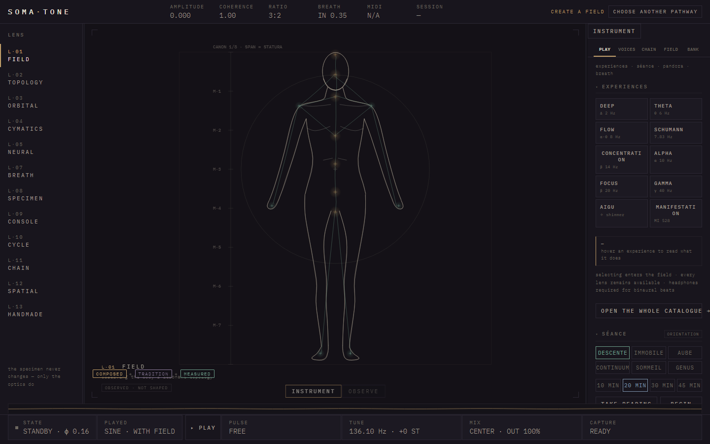

CREATIVE PRACTICE · PARIS
MARS
A creative practice for sound, place and signal.
We build the form a question requires — instruments that can be entered, operated and returned to.
SOUNDPLACESIGNALPARIS · WORKING INTERNATIONALLY
P·00
ONE METHOD
THE QUESTION COMES FIRST.
THE MEDIUM FOLLOWS.
MARS works across sound, public space and signal intelligence. Each project begins where an existing format stops being sufficient. The response is an instrument: a precise system with its own grammar, material and way of being used.
Find the question beneath the requested output — the one that changes what must be built.
Give that question a structure, a vocabulary and a surface someone can operate.
Ship an object that remains legible after the campaign, event or first encounter has passed.
I·01
LIVING SOUND INSTRUMENT
LISTENING BECOMES
A PLACE.
SOMA is a complete desktop instrument for rooms, practice and composition. Recorded matter is shaped into fields that remain live: playable, guideable and preservable.
It runs locally, without an account or a cloud dependency. The instrument carries its own engine; the player shapes the state.
THE INSTRUMENT
ONE FIELD.
THIRTEEN LENSES.
A dense working surface built to be operated. Every lens reads and shapes the same living field.

I·02
URBAN INSTRUMENT
THE CITY BECOMES
A SCORE.
ARCHÉ is a physical urban quest, played on foot and authored neighbourhood by neighbourhood. Cards establish the grammar; local guides hold the reading; streets provide the material.
The work is not an itinerary laid over a city. It is a way of making attention active — giving participants a structure through which a place can be read, crossed and remembered.
S·03
STRUCTURAL INTELLIGENCE
FOLLOW THE SIGNAL
UNTIL THE STRUCTURE APPEARS.
Ramification reconstructs the hidden structure of a system from public record: binding constraints, dependency chains and the seams where facts stop reconciling.
The work delivers cases, not predictions. The engine remains behind the artifact so the evidence, limits and reasoning stay visible.
A·01—06
THE PERCEPTION LABORATORY
THE WORK THE PRACTICE GREW OUT OF.
STATEMENT
NOT THREE SERVICES.
ONE PRACTICE, MOVING THROUGH THREE MATERIALS.
Sound becomes a field.
The city becomes a score.
A signal becomes a case.
The recurring act is the same: make structure perceivable, then give someone a way to enter it.
COMMISSIONS · COLLABORATIONS · RESEARCH
BUILD THE FORM
THE IDEA REQUIRES.
MARS works from Paris, internationally, with artists, institutions and organisations whose question needs more than a conventional output.